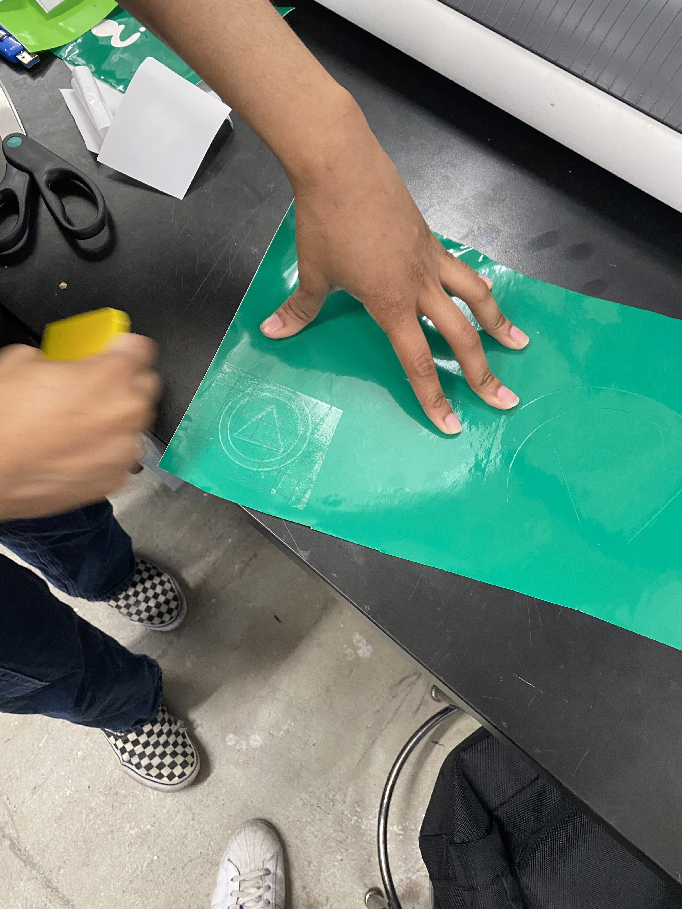

<br>
<h1>Week 2: 2D Design and Cutting</h1>
<br>
<div>
<p>This week we began learning how to use the laser-cutter, vinyl cutter, 2-D and basic 3-D modeling with CAD software Fusion 360, and measuring items with calipers.</p>
<p>We were taught about Kerf, which is an important concept in laser cutting. Because the laser eats away part of our materials, we need to modify our design to account for this, since our final product's measurements will be slightly off from our initial design measurements by roughly 1mm.</p>
<p>We are designing push-fit components, which are similar to puzzle pieces which have reciprocal edges and notches that lock together. This process teaches us how simple 2-D components can be combined to create complex 3-D objects. This process opened my eyes to how versatile a material cardboard can be, and especially how it presents an incredibly low-cost material for rapid prototyping, which is perfect for our purposes. </p>
<p>I was fascinated by the design of ‘living hinges’ that give us the ability to create flexible, movable objects out of completely rigid materials. I decided to experiment modeling living hinges in Fusion 360. Having never used the F360 software before, I followed some of the excellent tutorials produced by the youtube community, as well as official documentation from the company itself. </p>
<p>For my final project I thought it would make the most sense to include a spherical object that could house my lighting output device. The closest comparable designs I found for this were essentially different types of lamps and lanterns. Using Fusion 360 I designed a push-fit construction using two primary components that could be used to create a spherical shell. </p>

</div>